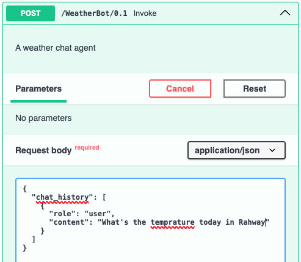
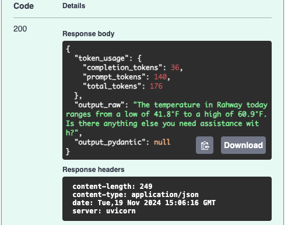

Plugins
Plugins are a concept unique to Semantic Kernel, in the agent framework space. Rather than giving agents access to individual tools, SK introduces the concept of plugins, which can be bundles of similar tools, thus more closely aligning with traditional concepts in software development around the creation of APIs.
In the SK Agent Framework, plugins can be included in two ways: 1. Local/Custom Plugins 2. OpenAPI API Plugins
Local/Custom Plugins
Local plugins are plugins that are created by the user and are specific to this
agent. To create one, simply create a new Python file which will be included
with your agent. The file should contain one or more plugin classes which are
derived from BasePlugin in the ska_types module and which contain methods
annotated with the kernel_function annotation from Semantic Kernel
(semantic_kernel.functions.kernel_function_decorator).
Authorization & Extra Data
Your custom plugin classes MUST inherit from BasePlugin. This base class has an
__init__ method which accepts two arguments:
authorizationwhich contains the value contained in theAuthorizationheader received from the client, if one is present. You can access the authorization token (if present) viaself.authorization.extra_data_collectorwhich contains an instance ofExtraDataCollectorwhich can be used to add extra data to the response. Extra data comes in the format of key/value pairs. Use theadd_extra_datamethod within the plugin to include extra data.
If you're overriding the __init__ method in your custom plugin,
make sure to call the base class's __init__ method with the authorization
and extra_data arguments.
Example
In this example, we've defined a WeatherPlugin which contains two annotated
methods gat_lat_lng_for_location and get_temperature. The first method takes
as input a location search string and returns the latitude, longitude, and
timezone of the location. The second method takes as input the latitude,
longitude, and timezone of a location and returns the low and high temperatures.
...
class WeatherPlugin(BasePlugin):
@staticmethod
def _get_temp_url_for_location(lat: float, lng: float, timezone: str) -> str:
return f"https://api.open-meteo.com/v1/forecast?latitude={str(lat)}&longitude={str(lng)}&daily=temperature_2m_max,temperature_2m_min&temperature_unit=fahrenheit&wind_speed_unit=mph&precipitation_unit=inch&timezone={timezone}&forecast_days=1"
@staticmethod
def _get_loc_url_for_location(self, location_string: str) -> str:
return f"http://api.geonames.org/searchJSON?formatted=true&q={location_string}&maxRows=1&lang=en&username=tealagents&style=full"
@kernel_function(
description="Retrieve low and high temperatures for the day for a given location"
)
def get_temperature(
self, lat: float, lng: float, timezone: str
) -> TemperatureResponse:
url = WeatherPlugin._get_temp_url_for_location(lat, lng, timezone)
response = requests.get(url).json()
if response:
response_int: TemperatureResponseInt = TemperatureResponseInt(**response)
return TemperatureResponse(
low=response_int.daily.temperature_2m_min[0],
high=response_int.daily.temperature_2m_max[0],
)
else:
raise ValueError(f"Error retrieving temperature")
@kernel_function(
description="Retrieve the latitude, longitude, and timezone for a given location search string"
)
def get_lat_lng_for_location(self, location_string: str) -> LocationCoordinates:
url = WeatherPlugin._get_loc_url_for_location(self, location_string)
response = requests.get(url).json()
if response:
response_int: CoordsResponse = CoordsResponse(**response)
return LocationCoordinates(
latitude=response_int.geonames[0].lat,
longitude=response_int.geonames[0].lng,
timezone=response_int.geonames[0].timezone.timeZoneId,
)
else:
raise ValueError(f"Error retrieving location coordinates")
Once the custom plugin has been defined, you need to make it available to a configured agent in your agent configuration file. Do this by populating the plugins portion of the agent configuration, which takes a list of defined plugins.
...
spec:
agents:
- name: default
role: Default Agent
model: gpt-4o
system_prompt: >
You are a helpful assistant.
plugins:
- WeatherPlugin
...
Finally, we need to update our environment to specify the python file which contains the custom plugin.
TA_API_KEY=<your-API-key>
TA_SERVICE_CONFIG=demos/03_plugins/config.yaml
TA_PLUGIN_MODULE=demos/03_plugins/custom_plugins.py
And that's all you need to do. In this example, the agent is a chat agent, similar to example 1, but now it has the ability to retrieve the temperature for a specified location.

